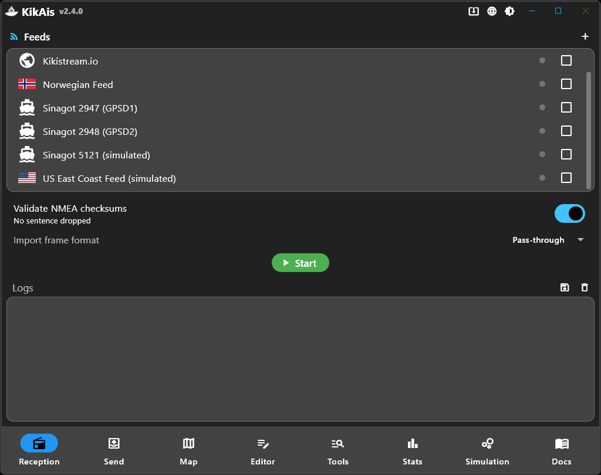
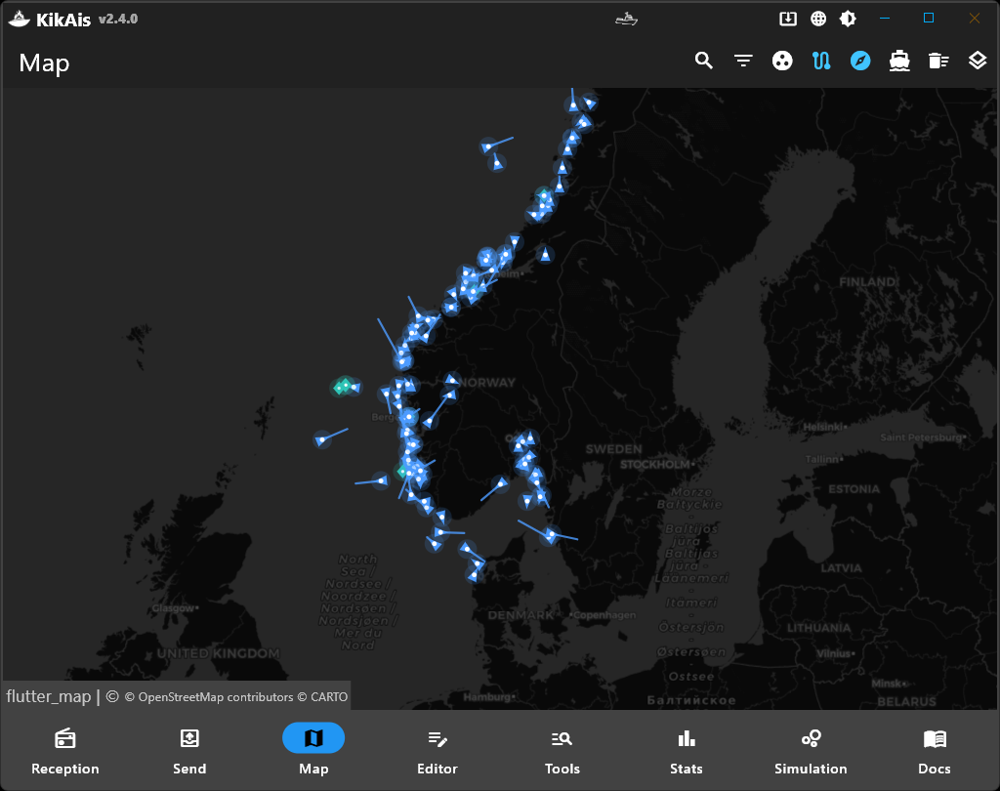
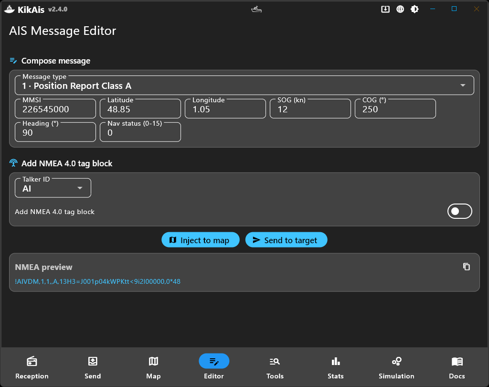
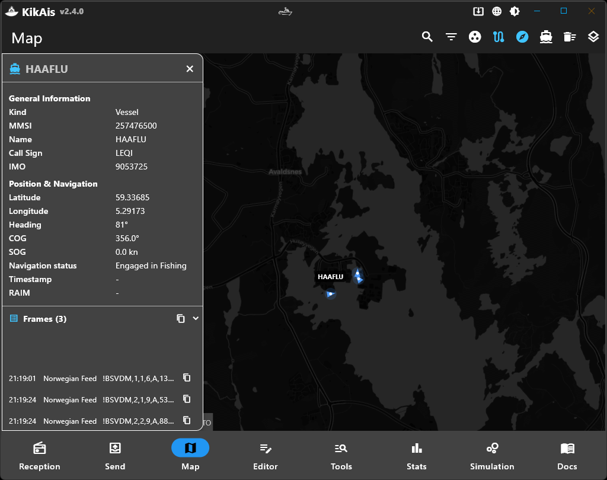
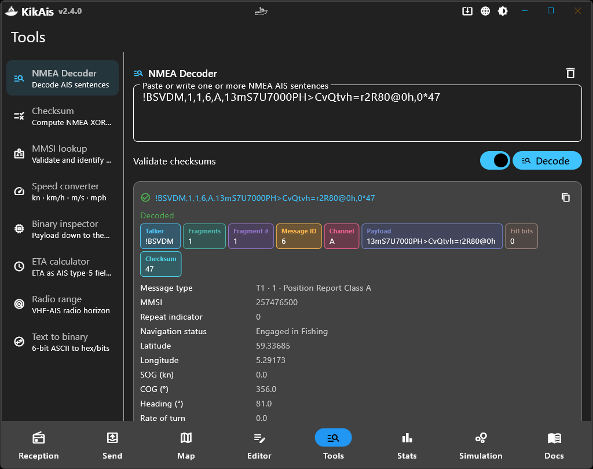
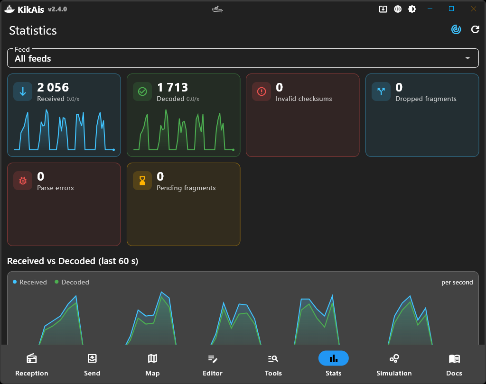
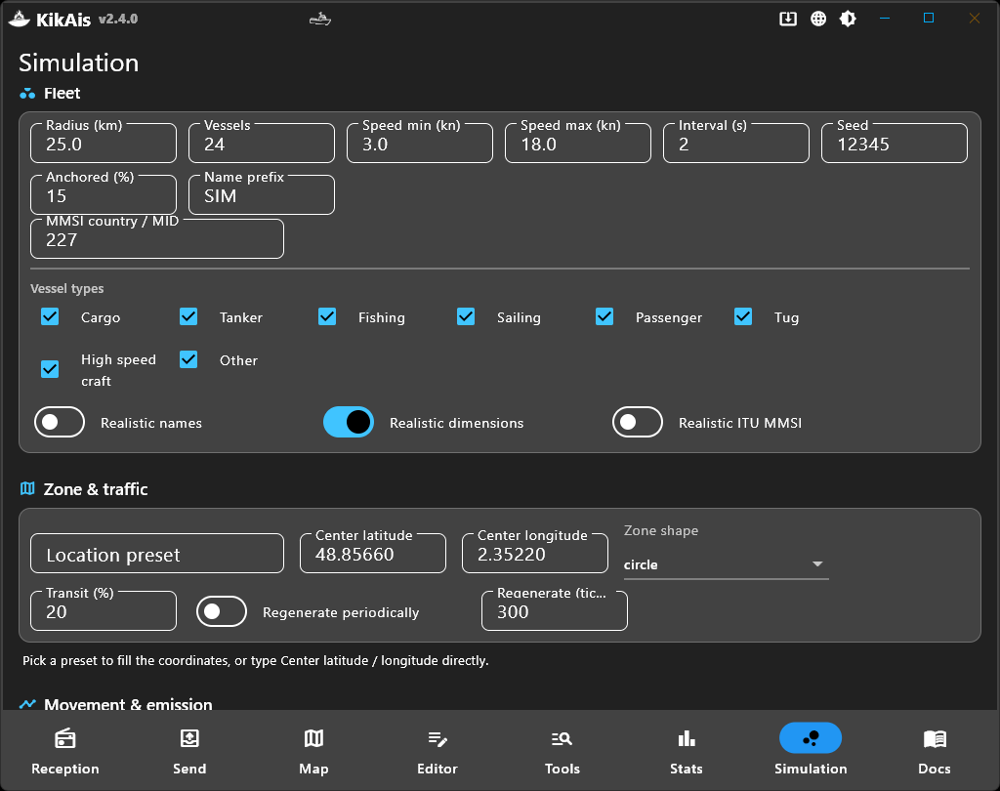
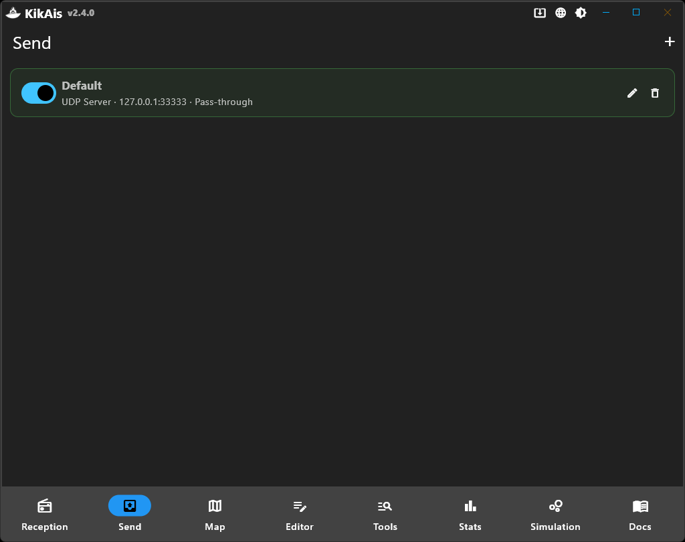
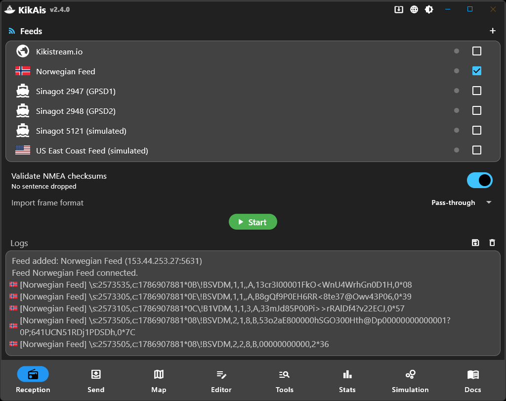

AIS data forwarding & visualization hub for NMEA 0183 — receive, decode, visualize and rebroadcast Automatic Identification System data, all in one desktop app.
Un hub complet pour les données AIS
Vue d'ensemble de l'application








